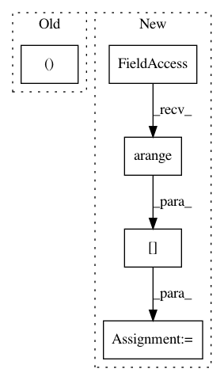

413099073a8659ac741c695f93b0b564b3188183,examples/classification/train_imagenet_multi.py,,main,#,66
Before Change
val_data = TransformDataset(val_data, ValTransform(extractor.mean))
print("finished loading dataset")
else:
train_data, val_data = None, None
train_data = chainermn.scatter_dataset(train_data, comm, shuffle=True)
val_data = chainermn.scatter_dataset(val_data, comm, shuffle=True)
train_iter = chainer.iterators.MultiprocessIterator(
After Change
print("finished loading dataset")
if comm.rank == 0:
train_indices = np.arange(len(train_data))
val_indices = np.arange(len(val_data))
else:
train_indices = None
val_indices = None
train_indices = chainermn.scatter_dataset(
train_indices, comm, shuffle=True)
val_indices = chainermn.scatter_dataset(val_indices, comm, shuffle=True)
train_data = train_data.slice[train_indices]
val_data = val_data.slice[val_indices]
train_iter = chainer.iterators.MultiprocessIterator(
train_data, args.batchsize, n_processes=args.loaderjob)
val_iter = iterators.MultiprocessIterator(
In pattern: SUPERPATTERN
Frequency: 3
Non-data size: 5
Instances
Project Name: chainer/chainercv
Commit Name: 413099073a8659ac741c695f93b0b564b3188183
Time: 2019-02-08
Author: Hakuyume@users.noreply.github.com
File Name: examples/classification/train_imagenet_multi.py
Class Name:
Method Name: main
Project Name: chainer/chainercv
Commit Name: c1ca4716e333662ec20d1804ea9f4e73b8b53136
Time: 2017-05-28
Author: yuyuniitani@gmail.com
File Name: chainercv/links/model/faster_rcnn/faster_rcnn_train_chain.py
Class Name: FasterRCNNTrainChain
Method Name: __call__
Project Name: keras-team/keras
Commit Name: 65a215646c653ab808170c8b8c10de2945262613
Time: 2017-04-07
Author: myutwo150@users.noreply.github.com
File Name: keras/backend/theano_backend.py
Class Name:
Method Name: in_top_k